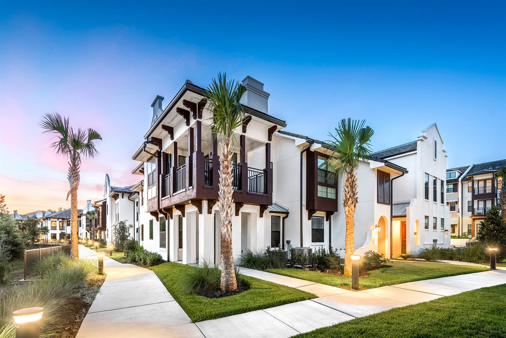
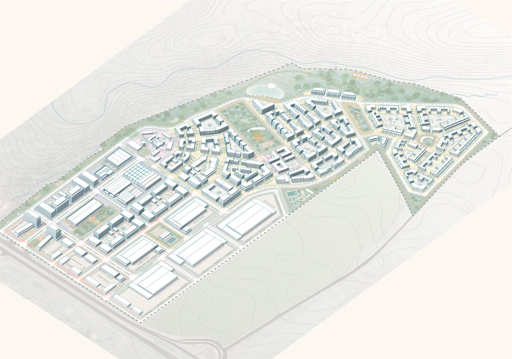
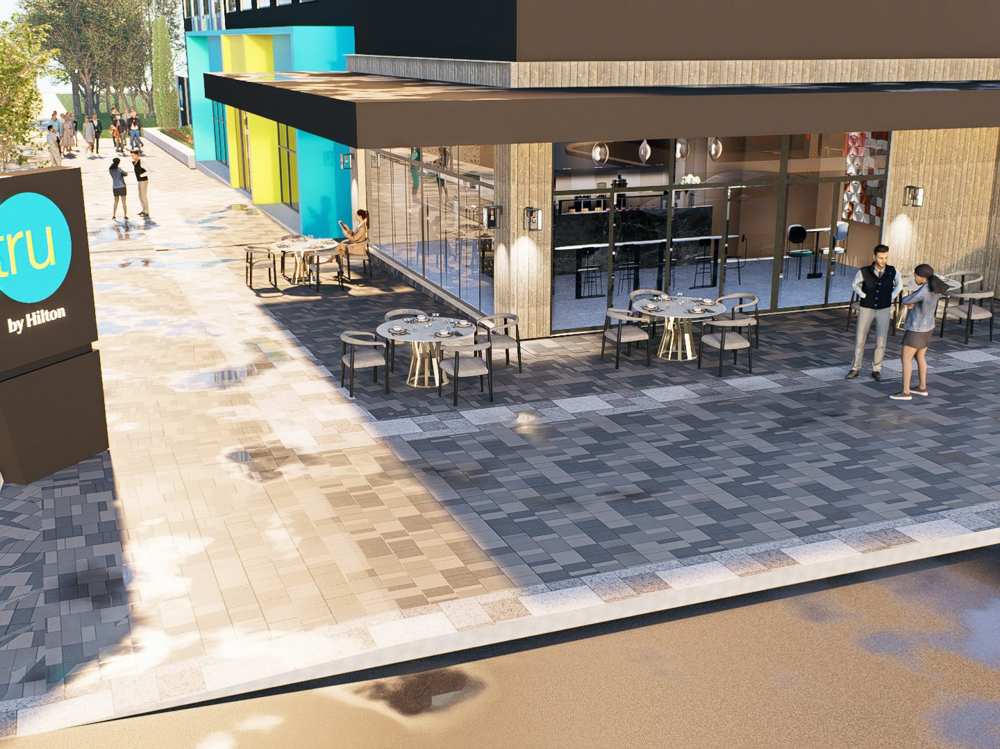

Inicio / El Proyecto
Ciudades con propósito.
Más que un desarrollo inmobiliario: una nueva forma de vivir, trabajar y encontrarse en el centro de Honduras.
La visión
Un nuevo reencuentro, diseñado para la vida.
En 2022, CIMA PROPERTIES adquirió 67 hectáreas frente al nuevo Aeropuerto Internacional de Palmerola con un propósito claro: crear un desarrollo urbano diseñado para la vida.
Distrito Palmerola es un nuevo capítulo para Comayagua. Representa una evolución urbana con mejores espacios públicos, nuevas oportunidades económicas, mayor conectividad y una vida urbana pensada para las personas.
Su meta: conectar personas, no solo espacios. Impulsar un nuevo estilo de vida con calidad urbana, diseño con propósito y progreso real para Honduras.

Planificación de primer nivel
Diseñado por GEHL, creadores de “ciudades para personas”.
La visión y el plan maestro fueron desarrollados por los reconocidos arquitectos urbanos internacionales GEHL, en colaboración con Castillo Arquitectos.
Bajo la teoría de las “ciudades suaves”, el distrito prioriza la escala humana: espacios que invitan a caminar, encontrarse y permanecer, donde la vida pública sucede de forma natural.
El programa y sus usuarios
Una ciudad que vive todo el día.
Las actividades en Distrito Palmerola son diversas y complementarias. Lo esencial —trabajo, supermercado, servicios— y lo recreativo —un café, la plaza, un parque— se superponen para crear el tejido de la vida pública.
Para las personas
Trabajadores, residentes y visitantes conviven en espacios públicos que fomentan el encuentro y la pertenencia.
Escala humana
Un entorno transitable y seguro que prioriza a peatones y ciclistas sobre el automóvil.
Diseño con propósito
Cada calle, plaza y parque tiene una intención: crear dinamismo y calidad de vida.

Siguiente paso
Descubre el plan maestro.
Conoce cómo se organiza el distrito: usos, cifras, espacios públicos y la Fase 1 que ya está en marcha.